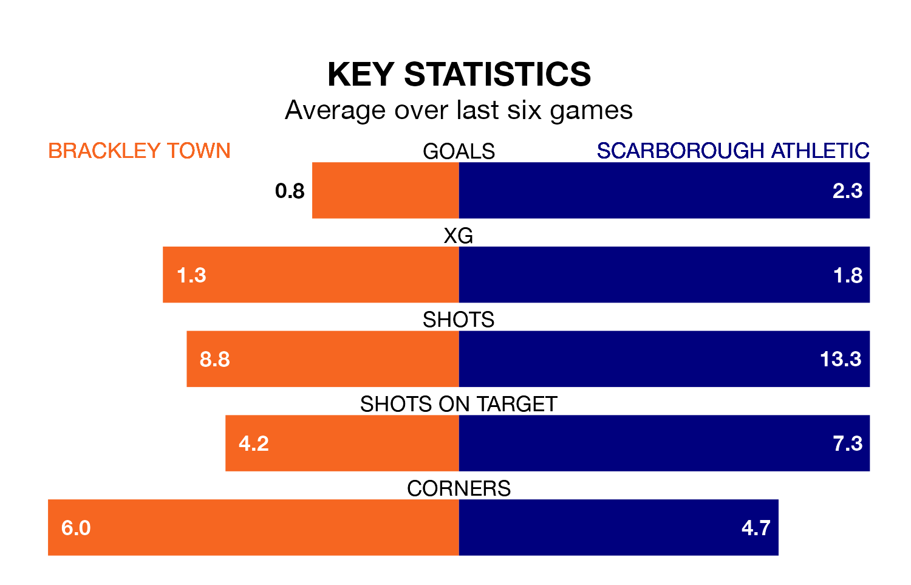

Scarborough Athletic travel to Brackley Town on early Saturday in National League North and South.
The visitors come into the game on the back of a win in their last match, having beaten Rushall Olympic 3-1 at home, with goals from Aidan Rutledge.
The Saints, meanwhile, lost their last match, 2-0 against Curzon Ashton.
Scarborough are 20th in the table after 21 games, of which they have won 10 and drawn two, earning 32 points.
Brackley are four places ahead of Athletic in 16th, with nine wins and six draws putting them on 33 points.
In Daniel James Newton, Town have one of the league's sharpest shooters so far this season. He has notched 10 goals in 22 appearances, to sit sixth in the scoring charts.
His goal rate of one every 191 minutes is quicker than that of Frank Mulhern, the away team's top scorer with a goal every 275 minutes, and a total of six goals in 20 games.
With 27 goals in 23 games so far this season, the Saints are the league's joint--8nd-lowest scorers with 1.2 goals per game. But they are conceding fewer than average too, letting in 21 goals at a rate of 0.9 per game.
Scarborough, meanwhile, are average scorers, with 1.4 goals per game. They have also conceded 1.4 goals per game.
The hosts are in mixed form in National League North and South, with three wins and three losses from their last six games.
With four wins and two losses over that period, Scarborough's form is better – they have taken 12 points from 18, compared to Brackley's nine.
